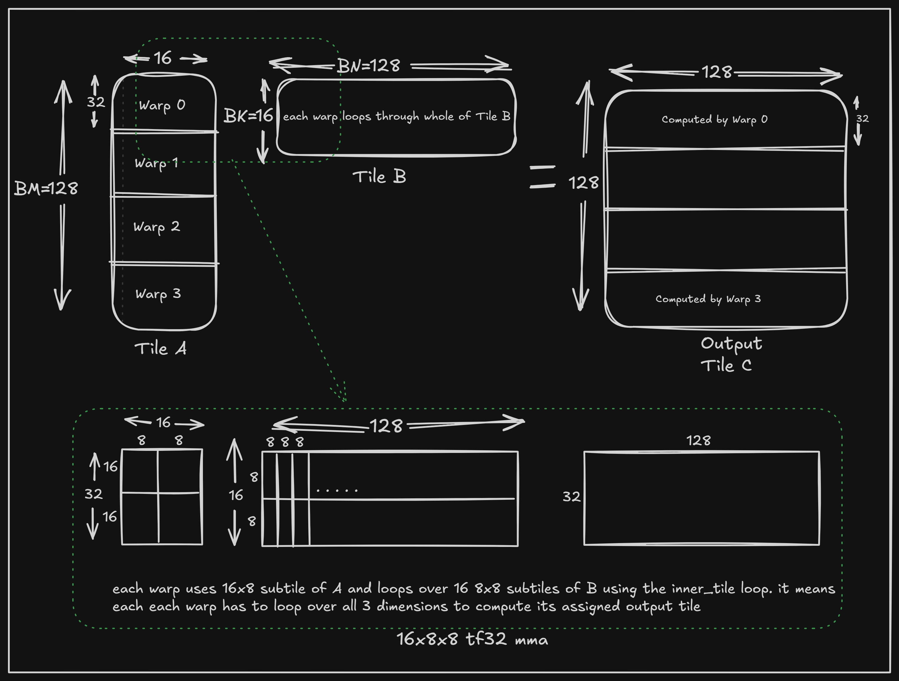
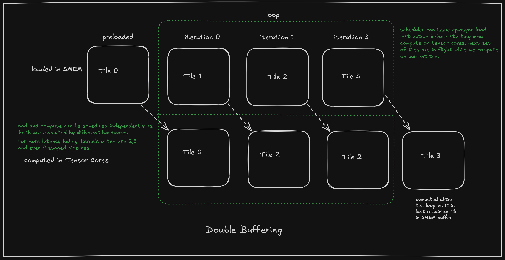
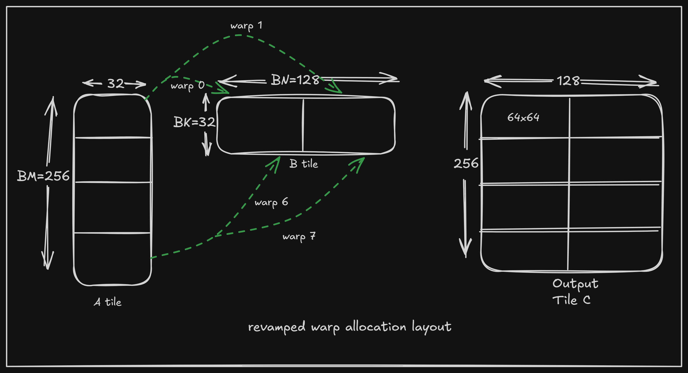
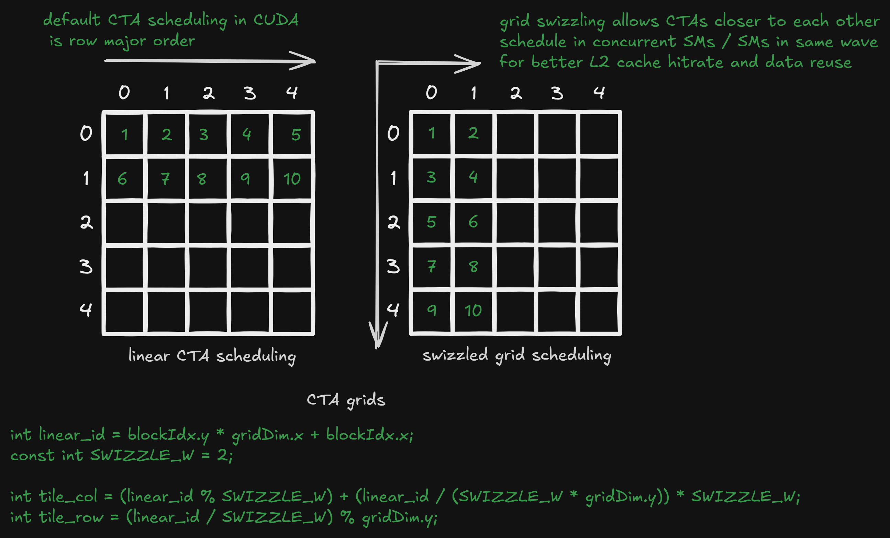
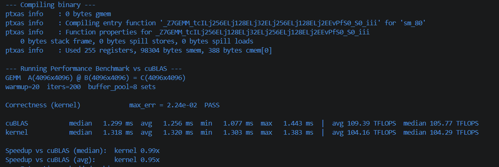

What is GEMM?
GEMM stands for General Matrix Multiply, and it's one of the most important and most studied computational kernels in all of computing. The operation itself is deceptively simple:
C = α · (A × B) + β · C
where A is an M×K matrix, B is a K×N matrix, and C is the resulting M×N matrix. α and β are scalars (usually 1 and 0 in the simplest case, reducing it to plain C = A × B).
That's it. Three nested loops, if you write it naively:
for (int i = 0; i < M; i++)
for (int j = 0; j < N; j++)
for (int k = 0; k < K; k++)
C[i][j] += A[i][k] * B[k][j]; // C initialised to 0The reason GEMM gets an entire subfield of systems research devoted to it is that this naive version is catastrophically slow on real hardware (often 50-100x slower than a well-tuned implementation on the same chip) for reasons that have nothing to do with FLOPs and everything to do with memory movement. GEMM does O(MNK) arithmetic but only O(MN + NK + MK) memory traffic, which means for large matrices there's an enormous amount of data reuse available: each element of A and B gets read many times across the computation. Whether you actually capture that reuse in registers, in shared memory / cache, across tiles, is almost the entire story of GEMM performance.
Because it's the arithmetic core of so much numerical software, GEMM has been implemented, re-implemented, and hand-tuned per architecture for decades. BLAS (Basic Linear Algebra Subprograms) standardized the interface back in the 1970s-80s, and essentially every numerical computing platform since — LAPACK, NumPy, MATLAB, PyTorch, TensorFlow — ultimately bottoms out in a call to someone's GEMM implementation. On NVIDIA GPUs, that's cuBLAS, which is the reference point this post benchmarks against.
Now I'll assume that readers have some working knowledge of GPU hardware in general and how GEMM is computed on it. For anyone keen to read in depth about GPU architectures and GEMM implementations, I'd point you to these excellent write-ups by Simon Boehm and Aleksa Gordić.
My motivation for this blog was that I've seen lots of public work and write-ups about HGEMM (fp16 input tensors), since it's the industry standard for AI workloads, and now with fp8 and fp4 variants taking over too — but I hadn't seen a single fp32 GEMM walkthrough on newer architectures. So I decided to figure it out myself, and here we are.
Summary of what's about to come: I optimize the fp32 matmul kernel step by step using techniques from the literature, and benchmark it against NVIDIA's hand-tuned kernel from their cuBLAS library. Unfortunately I don't have access to ncu for kernel profiling on A100, but that doesn't stop us from profiling the kernel and verifying bottlenecks — I mainly used clock64() to measure clock cycles over blocks of code.
Architectural Overview
The idea is simple: we follow the industry standard for GEMM kernels. We have matrix A and matrix B, and we're computing matrix C. We load both into SMEM first as A's and B's tiles and feed them to the GPU's computing units. The idea behind loading in tiles is to promote massive data reuse during computation by exploiting SMEM for staging data. All the arithmetic and address computation is done by CUDA cores, while we use tensor cores for computing the actual C = A×B.
KERNELS
Kernel 1 (Simon's kernel, CUDA cores replaced with tensor cores)
Simon's best kernel (optimized for CUDA cores and consumer hardware before tensor cores arrived — the pre-Volta era) runs at just 15% of what cuBLAS has to offer on an A100.
In a nutshell, Simon's kernel loads a tile from both matrices and distributes sub-tiles to each warp, where each warp further distributes the work. Each thread computes a tiny matrix multiplication of its own and keeps accumulating the output in its registers until the CTA has processed all the tiles along the K dimension to complete its share of the final output.
What primarily changes on A100 are tensor cores, asynchronous data loading, and larger SMEM.
As this was my first introduction to tensor cores, I was excited to see how much of a performance boost we could get by simply swapping CUDA cores for tensor cores. So I took Simon's kernel and swapped out the cores. Ampere supports only one PTX instruction for fp32 matmuls — mma.tf32.16x8x8. We'll discuss how to read PTX instructions shortly; here I used the high-level wmma API. Only the compute and stores back to GMEM change, and everything else stays the same. This alone doubles the performance and reaches ~33% of cuBLAS. That's enough to answer why tensor cores are called beasts. Now it's time to tame the beast — apparently by "feeding the beast"!
Kernel 2 (generalised kernel with swizzling and ptx mma)
This isn't the first kernel I wrote following the above, but it's the first one I'm documenting after numerous experiments. I significantly parted ways from Simon's kernel and introduced my own warp tiling layout (not the best idea — I spotted and corrected this later). Each CTA works on computing a squarish tile of output. Furthermore, I use 1D warp tiling instead of 2D (the mistake) along the M dimension, i.e. each warp computes a rectangular strip along tile A and loads the complete tile B in the form of sub-tiles (rectangular strips) along the K dimension.
I also introduce swizzling in this kernel for loading data from GMEM to SMEM and from SMEM to registers before feeding it to tensor cores. Swizzling itself would need a whole section to properly explain, but in a nutshell: SMEM, unlike other GPU memories, is stored across 32 banks. If multiple threads try to access the same bank at the same instant and ask for different data, the GPU has to serialize those instructions to avoid race conditions and data corruption. This serial execution hurts latency, and if all 32 threads hit the same bank at once, it's catastrophic for the kernel. To avoid this, every load and store to/from SMEM should have each thread hitting a different bank. This can be done with XOR swizzling, where for each row in the tile we shuffle the columns in groups of 4 (for float4 / 128-bit single-instruction loads). Because of this, no two threads working on different rows hit the same bank when accessing the same columns. For further details, I'd point readers to Aleksa Gordić's swizzling section and this write-up by Lei Mao. I picked the generalised swizzle formula from his blog.
I also chose to use low-level PTX instructions for the tensor core matmul instead of the high-level wmma API, to have much more manual control and to learn more about its intrinsics. PTX can be thought of as the IR (intermediate representation) between CUDA C++ and the assembly that actually runs on hardware. PTX gives much more control over the instructions the compiler emits, and some features it offers aren't part of the high-level API as of the latest hardware generations.
mma.sync.aligned.m16n8k8.row.col.f32.tf32.tf32.f32
{ %fd0, %fd1, %fd2, %fd3 },
{ %fa0, %fa1, %fa2, %fa3 },
{ %fb0, %fb1 },
{ %fc0, %fc1, %fc2, %fc3 };Breakdown of identifiers
mma stands for Matrix Multiply-Accumulate instruction. sync.aligned means all 32 threads in the warp must execute this instruction simultaneously. m16n8k8 is the problem shape: M=16, N=8, K=8. row.col specifies the layout — matrix A is row-major while B is column-major. f32.tf32.tf32.f32 gives the data types for (D, A, B, C), where TF32 is NVIDIA's tensor-float variant of floating point representation. The { } braces assign registers to the instruction, specifying the output fragment followed by the input matrix fragments.
For tf32 matmul, sm80 (A100) only supports the m16n8k8 mma variant, meaning a tensor core can compute a matmul of 16×8 by 8×8, producing a 16×8 output matrix. To execute this instruction, tensor cores require data fragments of A (16×8) and B (8×8) already in registers of the warp executing the instruction. The accumulator fragments holding the running matmul output also need to be in registers across all 32 threads of the warp. Tensor cores expect these fragments in a specific layout, otherwise the output is wrong. NVIDIA's docs explain this well.
I ran this kernel with 128×16×128 tile sizes and 128 threads (4 warps) per CTA, over 4096³ matrices.

So the overview of the kernel is as follows: each CTA consists of 4 warps and computes a 128×128 output tile of C. Each warp computes a 32×128 slice of tile C by fixing a 32×16 slice from tile A and looping over a 16×128 strip of tile B. Zooming into a single warp, it has to follow the strict dimensions required by the mma instruction — so each warp loops over A's sub-tile as 4 separate 16×8 tiles, and each of those further loops over 32 8×8 tiles across the 16×128 B tile.
This may seem obvious now, but it wasn't to me back when I wrote the kernel. This kernel has several trivial issues that cap it at only ~43% of cuBLAS. First, a warp has to reload the same B sub-tile from SMEM every time it iterates over A's tile. Second, the rectangular-strip-per-warp layout is far too inefficient for the massive data reuse that matmul inherently offers. My intuition at this point was to build a generic kernel where I could experiment with tile shapes and threads per CTA.
I've kept this inefficient kernel here as part of my worklog, and as a caution for what not to do. Or perhaps I'm just too lazy to go back and correct it.
Kernel 3 (adding async loads and double buffering)
We keep everything the same as the previous kernel except for two changes: async loads from global memory to SMEM using the cuda memcpy_async API, and a setup for a multi-buffered pipeline.
memcpy_async compiles down to the cp.async PTX instruction (which we'll use later), and it differs significantly from thread-based data loading. When loading data from GMEM using threads, each thread has to wait for its requested data to arrive before moving on to the next op — i.e. it's a synchronized operation, and before staging data into SMEM it needs to first be staged into thread-level registers. A100 solves this by introducing dedicated hardware for moving data from GMEM to SMEM asynchronously via the cp.async instruction. This saves register space and lets the thread proceed as soon as it hands its instruction off to the scheduler.

Then comes the multi-staged pipeline. The idea is that compute is much faster than data loading, which means that once tensor cores finish computing a tile's output, they sit idle while the next tile of data loads. This starvation can be avoided if we load multiple tiles of each input matrix ahead of time and keep the pipeline full. We can schedule a tile to load and start compute on the current tile simultaneously, since cp.async is asynchronous and GMEM → SMEM loading is completely independent of tensor core mma in hardware — it's a direct, feasible path. So that's what I did. For the pipelining itself, I again use a generic structure so I could experiment with different num_stages values instead of hardcoding it at 2 or 3. This reaches 50% of cuBLAS performance. At this point I suspected there was significant overhead from tracking pipeline variables, but I wanted to find the best config first before locking it in.
Kernel 4 (ldmatrix and remapping warp layout)
In this kernel I introduced two major changes — remapping the warp layout for better data reuse, and using ldmatrix for loading tile fragments from SMEM to registers.
The previously used 1D strip layout for warp work allocation had major flaws that I discovered while wrapping the compute section in clock64() and profiling it. First, since we were very conservative with resources and used only 128 threads, that meant only 4 active warps per SM at a time. Second, each warp had to load the whole B' tile. And lastly, the biggest flaw was almost no data reuse during compute, when matmul can inherently offer immense data reuse opportunity. Let's understand the data reuse point with an example:
For a warp computing 64 total output elements:
- 1D Rectangular Strip (64 × 1):
- Data loaded: 64 + 1 = 65 elements.
- Efficiency: 64/65 ≈ 0.98 operations per loaded element.
- 2D Square Tile (8 × 8):
- Data loaded: 8 + 8 = 16 elements.
- Efficiency: 64/16 = 4.0 operations per loaded element.

So it's always best to allocate a squarish output sub-tile to each warp. As explained, I shifted to 8 warps per CTA, with each warp computing a 64×64 output sub-tile over 256×32×128 input tiles, arranged in a 4×2 warp layout with double buffering. I derived the constants empirically (this is where the generic implementation helped), and it was also partly intuitive — for maximum throughput, let each warp work on bigger tiles and keep the tensor cores busy throughout. This configuration limits concurrent CTAs per SM to 1, due to SMEM limits, but it worked best out of the search space I explored.
Next, I introduced ldmatrix, a specialized PTX instruction that loads matrix fragments from shared memory directly into warp registers in a single instruction. Checking the NVIDIA PTX docs, ldmatrix on Ampere (A100) is officially supported only for 16-bit types (.b16). Since TF32 is 32-bit, you might assume it wouldn't work — but here's the trick: registers are just 32-bit buckets of raw bits. The ldmatrix.b16 instruction views memory in 16-bit word chunks and packs two of them side by side into a single 32-bit register. Because a TF32 float is just two 16-bit halves placed back to back, we can use ldmatrix to load TF32 data simply by passing the .b16 modifier:
asm volatile(
"ldmatrix.sync.aligned.m8n8.x4.shared.b16 "
"{%0, %1, %2, %3}, [%4];\n"
: "=r"(frag_A[i][0]), "=r"(frag_A[i][1]), "=r"(frag_A[i][2]), "=r"(frag_A[i][3]) // Outputs
: "r"(As_ptr) // Input
);m8n8.x4loads four 8×8 tiles in 16-bit terms. For 32-bit TF32, this maps to four 8×4 tiles, which perfectly matches the input fragment layout required bymma.syncfor matrix A.- While ldmatrix lands matrix A's elements in the exact thread registers
mmaexpects, for matrix B it delivers them to the wrong threads. Fixing this required manual warp shuffles (__shfl_sync) that completely destroyed performance, so I kept standard direct SMEM loads for matrix B.
Understanding the mma–ldmatrix collaboration is a lengthy topic, so curious readers can read this blog from Lei Mao and use the NVIDIA docs to connect the dots.
I also switched from CUDA barriers to the CUDA pipeline API for a less cluttered, more intuitive codebase, though the performance change is negligible since they compile down to the same instructions.
There were likely a lot of other minor changes between these two kernels, but the gap and number of iterations between them were too many to track individually, so I've bundled them into this one.
This reaches ~80% of cuBLAS. For anyone curious about individual features' impact: I saw around 5-7% from shifting to ldmatrix over manual SMEM-to-register loads, and roughly 15% from switching to the 2D warp layout with 8 warps per CTA (measured on 128×16×128 tile sizes).
Kernel 5 (grid swizzling)
The next kernel has a few minor changes and reaches up to ~85% performance. Mainly, we introduce grid swizzling. Its purpose is to reorder the sequence in which CTAs execute to improve L2 cache reuse. By default, CTAs execute in row-major order across the grid. In GEMM, data reuse is concentrated — neighbouring CTAs load the same data along at least one dimension. Under linear scheduling, this data gets thrashed and evicted from L2 to make room for new tiles.
So we swizzle the grid layout and change the CTA execution order for a better L2 hit rate and less thrashing. This means CTAs executing concurrently on different SMs can fetch reusable data from L2 instead of GMEM. This can be done in just a couple of lines of code:

This lets CTAs schedule across different SMs within the same wave, by choosing SWIZZLE_W CTAs in row-major order across the grid before striding down to the next row. It then strides across columns after scheduling all CTAs through the last row of the grid. A grid swizzling pattern with more squarish CTA scheduling would likely work even better, though implementing 2D grid swizzling comes with its own complexities.
Apart from this, I tried to reduce address-calculation overhead in the mma loop, mainly by hoisting static variables for B fragments out of the loop and using bitwise and shift operators instead of standard arithmetic. This simplified the indexing so the compiler could pull repetitive ops out of the dynamic loop and just increment the pointer while reusing the predicate. I did the same for A fragments in the next kernel.
Kernel 6 (stores to GMEM)
In this kernel I focused on stores back to GMEM from accumulated registers. Until now we've been using 32-bit store instructions, with a single thread issuing 128 instructions for its 128 accumulations. Looking at the accumulator layout in a warp, each thread holds 2 consecutive accumulations, so we can use float2 stores instead, cutting the store instruction count in half. Another approach is to use SMEM as a staging area and untangle the data into contiguous 128-bit-aligned chunks. Since the matmul is already complete at this point, SMEM is a free scratchpad. For bank conflicts, since the columns stay the same across the B tile and C tile, we can reuse the same swizzle function. We can then assign accumulations back to threads and issue coalesced float4 stores. I found direct float2 stores good enough, with negligible gains from float4, so I'm using float2. This takes the kernel past 90% of cuBLAS performance.
Kernel 7 (compiler optimizations)
For the final kernel of the series, I don't pull any new optimization algorithm or technique out of the CUDA hat — instead we focus on simplifying what we've already built and letting the compiler and instruction scheduler do the job for us. We add #pragma unroll on the for loops for mma compute and stores, which takes us to ~98%.
#pragma unroll is a compiler optimization that signals nvcc to expand loops into a flattened sequence of SASS instructions. This improves performance in a few distinct ways. First, the compiler no longer has to generate loop-tracking variables, condition checks, or branching logic. Second, the compiler can assign independent physical registers to each loop iteration. This breaks artificial data dependencies, allowing operations to execute back to back (though it does increase overall register pressure, the tradeoff is too good to pass up).
Most importantly, because the SASS code is now completely flattened, the GPU's hardware instruction scheduler can "look ahead." It can schedule and execute instructions for subsequent iterations that are completely independent of the current one, unlocking massive instruction-level parallelism (ILP) and latency hiding.
A great example of this in our kernel is the ldmatrix instruction, which loads fragments from A's tile into registers. Because the fragment loads across different iterations are totally independent, unrolling lets the scheduler issue memory loads for future tiles immediately, without waiting for previous ones to finish computing. This creates deep memory-level parallelism (MLP):
for (int inner_tile = 0; inner_tile < BK / TILE_SIZE_K; ++inner_tile) {
...
for (int i = 0; i < TILES_PER_WARP_M; ++i) {
// ldmatrix instructions here are issued on a trot, without a branching barrier between the loopsEarlier, in Kernel 3, I mentioned a generalised multi-staging pipeline. I revamped it — moving from tracking the number of tiles ingested by the kernel to a simple XOR-based tracking scheme for a 2-staged pipeline. This takes us past the finish line: we equal cuBLAS on 4096³ matrices, at ~105 TFLOPS.
Interestingly, I also had the idea that since we execute the mma instruction in serial order across 16×8×8 chunks — computing a miniature tile of C in a loop that's independent of any other mma operation in the kernel — as soon as the mma block finishes looping over all the tiles assigned to it, it could be flushed back to global memory asynchronously before assigning any further instructions. But analyzing the SASS code for the previous kernel, I saw a continuous stream of HMMA for tensor core mma, followed by STG.64 for the float2 stores back to GMEM. I tried separating the epilogue of the compute loop by processing the final block in SMEM outside the main loop. As expected, the resulting SASS code does show HMMA and STG instructions interleaved nicely — meaning as soon as the final tile is processed by the warp, it launches the STG instruction instantly. This confirms the instruction scheduler was already doing this job for us implicitly.
Here's the final kernel configuration:
Final kernel configuration
- Threads: 128
- Tile sizes (BM × BK × BN): 128 × 32 × 64
- num_stages: 2
- Registers per thread: 255
- MMA tile size: 16 × 8 × 8
Performance comparison
| Kernel | Major change | % of cuBLAS |
|---|---|---|
| Kernel 1 | CUDA cores → tensor cores | ~33% |
| Kernel 2 | PTX mma + swizzling | ~43% |
| Kernel 3 | async loads + pipelining | ~50% |
| Kernel 4 | warp remap + ldmatrix | ~79% |
| Kernel 5 | grid swizzling | ~85% |
| Kernel 6 | float2 GMEM stores | ~90% |
| Kernel 7 | loop unrolling + epilogue | ~100% (~105 TFLOPS) |

With all the resources and write-ups I read about GEMM and CUDA, I built up a mental map of several optimizations I used, while also coming across many newer ones along the way. My understanding of PTX, SASS code, instruction scheduling, and hardware-software cooperation gained a great deal of clarity, along with my ability to write efficient, clean kernels.
From a practical standpoint, GEMM kernels are rarely written in isolation nowadays — preceding and successive kernels are often fused with GEMM as prologue and epilogue, along with quantisation. While the latest hardware generations introduce newer challenges and optimisations, this kernel is a good launchpad for laying the foundation to write ever-advancing, optimised GEMM and GPU kernels in general.
References
- Simon Boehm — "How to Optimize a CUDA Matmul Kernel for cuBLAS-like Performance"
- Aleksa Gordić — matmul blog
- Lei Mao — CUDA Shared Memory Swizzling
- Lei Mao — CuTe ldmatrix
- NVIDIA PTX ISA / CUDA C++ Programming Guide (official docs)
- Programming Massively Parallel Processors (PMPP), Kirk & Hwu